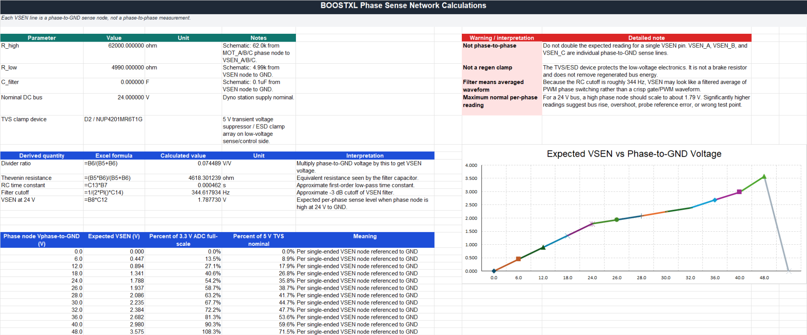

Public research and engineering work
TI Piccolo PMSM
dynamometer.
A dual-motor dynamometer built to develop and validate PMSM control across embedded firmware, CAN communications, real-time testing and measured torque-speed data.
01 / Context
Control at
testbed scale.
This work was completed in a research test facility. Jonathan's documented contributions span dual-motor control integration, SCI-to-CAN migration, real-time test integration and validation workflows for speed, torque, power and efficiency data.
It is not a private client engagement or an exclusively owned product. The page links to the public repository without reproducing models or large source files.
02 / Architecture
Motors, controls
and evidence.
Technical scope
The public material documents TI C2000 F28069M control, field-oriented control architecture, QEP encoder integration, CAN communications, Speedgoat/MATLAB real-time testing where documented, efficiency mapping and validation data processing.
Dual-motor PMSM dynamometer integration.
Torque-speed, power and efficiency validation workflows.
Phase sensing, regeneration and long-term testability
Phase sensing, regeneration and
long-term testability.
The phase-sense network was documented to preserve the dynamometer’s operating knowledge and support future maintenance, troubleshooting and engineering use.
Each BOOSTXL-DRV8305EVM motor phase is sensed relative to ground through a 62.0 kΩ and 4.99 kΩ divider. Its ratio is approximately 0.07449 V/V, giving an expected VSEN_A, VSEN_B or VSEN_C range of 0 to 1.79 V from a 24 V DC bus.
A 0.1 µF capacitor at each VSEN node forms a low-pass filter with the divider’s approximate 4.62 kΩ Thevenin resistance. The resulting time constant is about 462 µs and the cutoff frequency is approximately 344 Hz. The VSEN signals therefore represent filtered phase-to-ground switching behavior rather than sharp PWM waveforms.
D2, an onsemi NUP4201MR6T1G TVS/ESD array, protects the low-voltage sensing electronics from electrostatic discharge and brief overvoltage transients. It does not absorb sustained regenerated energy or act as a brake resistor, DC-bus clamp or dump circuit.
During regenerative operation, the load motor returns energy through the inverter to the shared DC bus. If the supply cannot absorb that energy, the bus voltage can rise even though the VSEN inputs remain protected.
Regenerated energy must therefore be managed separately through a regenerative supply, controlled braking resistor, DC-bus clamp, temporary storage or operating limits appropriate to the final station architecture.
The phase-sense network supports measurement and diagnosis; the TVS array protects the sensing electronics; neither manages power returned to the DC bus.
Recording these boundaries helps future users distinguish sensing faults, ADC-range problems and transient events from genuine regeneration-driven bus overvoltage. It also preserves the assumptions and expected measurements needed to keep the dynamometer understandable, repairable and repeatable.
{kind=link}

VSEN_A, VSEN_B and VSEN_C are individual phase-to-ground measurements. They are not direct phase-to-phase voltage signals.
03 / Evidence
Measured work
with boundaries.
Repository documentation, hardware integration notes, MATLAB/Python processing and measured plots support the scope described here. Complete worked examples, raw Simulink models, sponsor material and credentials remain outside this site.
Start a technical discussion
Bring the
technical question.
Describe the system, its current stage and the evidence available. Secure file exchange can follow the initial discussion.
Start a technical discussion →Or write directly: info@herdersystemen.com